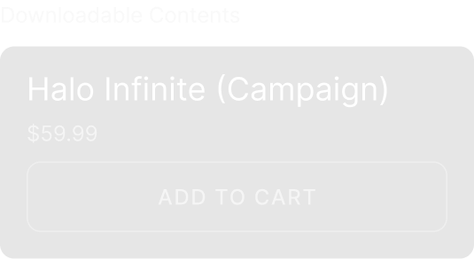

All Games > Adventure Games > Cognosphere LTD. > Ghenshin Impact

This game is a brand-new entry in the OCTOPATH TRAVELER series, the first installment of which was initially released in 2018 and sold over 3 million copies worldwide.
The story takes place in Solistia, a land comprising an eastern and western continent divided by the sea. It is a bustling era, wherein large vessels navigate busy sea routes and the power of steam gives birth to new technologies. Some people thrill to glamorous stars of the stage and industry, while others are brought to tears by war, plague, and poverty. In this faraway realm, eight travelers hailing from different regions venture forth for their own reasons. Step into their shoes and explore the land as you see fit, using their unique talents to aid you along your journey. Embark on an adventure all your own.

KEY FEATURES
- Begin your adventure as one of eight new travelers, each with their own origins, motivations, and unique skills.
- The series’ HD-2D graphics, a fusion of retro pixel art and 3DCG, have reached even greater heights.
- The story takes place in Solistia, where diverse cultures thrive from east to west and the industries of the new era flourish. You can sail the seas and explore every corner of a world that changes from day to night.
- Each traveler has a unique set of Path Actions they can use to battle townspeople, obtain items, take others along in their travels, and more. Where will you go? What will you do? Every path is yours to take.
- Familiar mechanics from the original game have been preserved, like the freedom to develop your travelers’ jobs and skills, as well as the Break and Boost system that made battles so exhilarating. New mechanics have also been added.
Specifications
Minimum
OS
Windows 10 RS5 x64
Processor
Intel Core i5 or equivalent
Memory
16 GB
Storage
30 GB
Direct
11
Graphics
AMD RX 570 or Nvidia GTX 1050 Ti
Additional Notes
60 FPS @ 1280x720, Preset "Low", 2GB VRAM required
Minimum
OS
Windows 10 RS5 x64
Processor
Intel Core i7 or equivalent
Memory
16 GB
Storage
30 GB
Direct
11
Graphics
Radeon RX 5700 XT or Nvidia RTX 2070
Additional Notes
60 FPS @ 1920x1080, Preset "Highest", Systen RAM 16GB required when running on Intel GPU
Language Supported
Audio: Chinese - Simplified, English, Korean, Japanese. Text: Chinese - Simplified, Chinese - Traditional, English, French, German, Italian, Japanese, Korean, Portuguese, Portuguese - Brazil, Russian, Spanish - Spain, Spanish - Latin America, Thai, Turkish, Vietnamese
Copyright © COGNOSPHERE. All Rights Reserved.
Reviews
OCTOPATH TRAVELER II
Free
